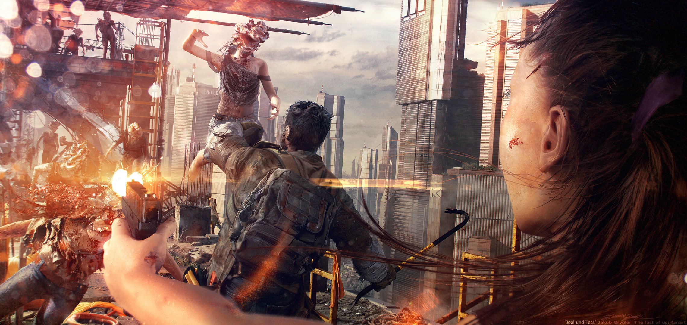

Experience the
post-apocalyptic world of The Last of Us
Survive in a world ravaged by infected creatures and ruthless survivors.
Survive
A Post-Apocalyptic Journey Like No Other
Experience the gripping storyline, intense gameplay, and stunning
visuals of "The Last of Us." Immerse yourself in a world ravaged by a
deadly pandemic, where survival is not guaranteed and every decision
matters.
Immersive
Uncover the secrets of a post-apocalyptic world
Experience the groundbreaking gameplay mechanics, intricate AI
complexity, and captivating narrative depth that make The Last of Us the
ultimate gaming experience. Immerse yourself in a post-apocalyptic world
where every decision matters and survival is the ultimate goal. With
stunning visuals, intense action, and emotional storytelling, this game
will keep you on the edge of your seat from start to finish.
Unforgettable Characters
Meet unforgettable characters who will leave a lasting impact on your
gaming journey.
Thrilling Gameplay
Experience thrilling gameplay that will keep you engaged for hours.

Emotional Storytelling
Get ready for an emotional rollercoaster with a deeply engaging and
thought-provoking storyline.
The Last of Us is an absolute masterpiece. The story, characters, and
gameplay are all top-notch.It's a game that will stay with you long
after you finish playing.
John Doe
Gaming Enthusiast
Explore Images
Discover stunning in-game visuals and concept art.
Questions
Find answers to frequently asked questions about the game, including
gameplay, system requirements, and availability.
The Last of Us is a series of third-person action-adventure games that
feature tense and dramatic action, gameplay, and other intense
elements.
The Last of Us Part 1 PC recommended specs, to play the game on high graphic settings at 1080p, 60 fps, are as follows: GPU: AMD Radeon RX 5700 XT (8GB), AMD Radeon RX 6600 XT (8 GB), NVIDIA GeForce RTX 2070 Super (8 GB) or NVIDIA GeForce RTX 3060 (8 GB) CPU: AMD Ryzen 5 3600X or Intel Core i7-8700. RAM: 16 GB.
The Last of Us Part 1 is available on PC, PS4 and PS5. Keep visiting the site for any updates regarding any future platform Launch.
The Last of Us multiplayer mode, called Factions, was originally available on PlayStation 3 but was shut down in 2019. It is still accessible on PlayStation 4 via The Last of Us Remastered, but is not on PS5 or PC.
The Last of Us did get some story DLC, with Left Behind exploring part of Ellie's story prior to the game's main campaign and her relationship with Riley, and showing how Ellie got bitten.